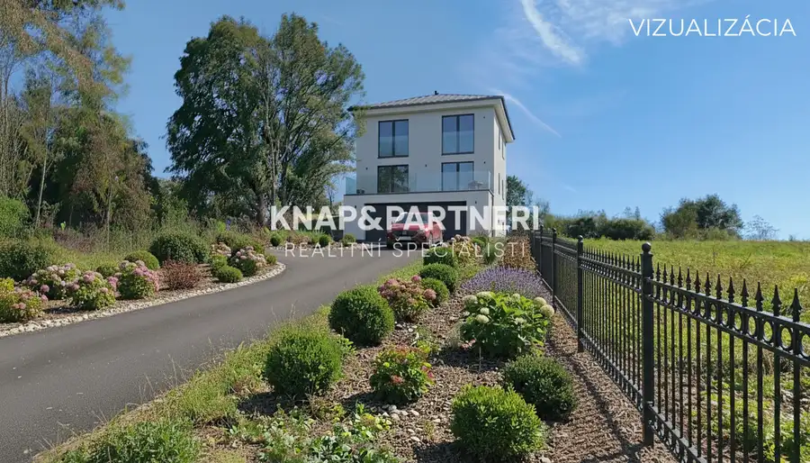
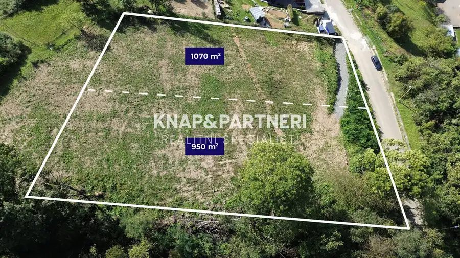
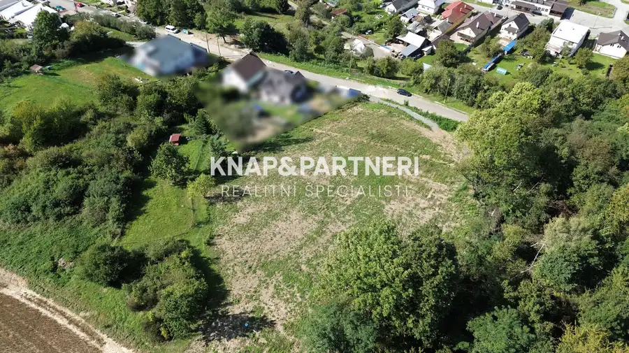
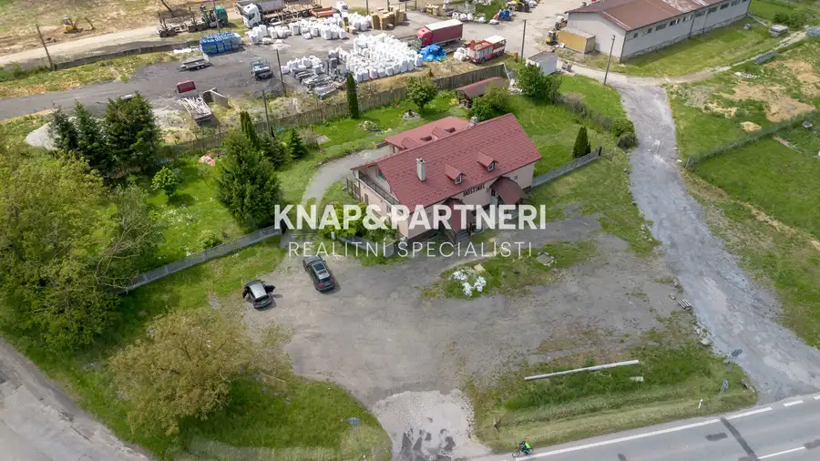
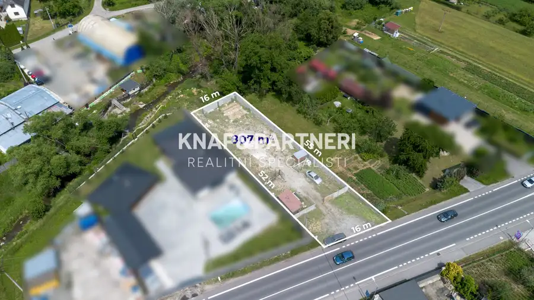
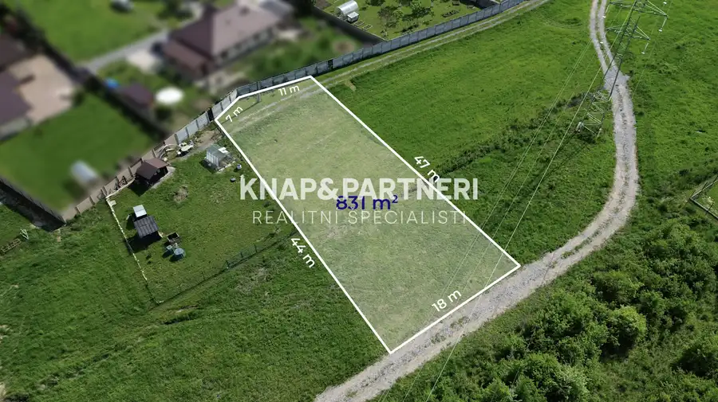

Stavebný pozemok 950m2, všetky is, Hanušovce nad Topľou
Hanušovce nad Topľou



- Plocha950 m²
- VlastníctvoOsobné
O nehnuteľnosti
Pokoj dediny, komfort mesta a výhľad, ktorý si zamilujete. Ponúkame na predaj pozemok s výmerou 950 m2 v meste Hanušovce nad Topľou, na ulici Širiava.Pozemok má k dispozícii všetky inžinierske siete - voda, elektrina, plyn, kanalizácia a optika, kotré sa nachádzajú priamo pri pozemku.Výborná dostupnosť - polhodina od Prešova a Vranova, a po dokončení obchvatu, ešte rýchlejšie:)►CELÚ PONUKU A VIDEO SI POZRITE NA◄ https://bit.ly/POZEMOK_HANUSOVCE_950M2 - stačí skopírovať tento odkaz do prehliadačaĎalšie podstatné informácie:◄výmera 950 m2- ideálny na rodinný dom podľa vašich predstáv◄šírka pozemku je 24m a dĺžka je 42m.◄IS - obecný vodovod, kanalizácia, elektrina, plyn a optika - hneď pri pozemku◄pozemok sa nachádza v tichej časti mesta◄podľa územoplánovacej informácie mesta je pozemok určený na výstavbu rodinných domov◄ slnečný pozemok je orientovaný vo svahu, čo dáva priestor pre kreatívne riešenie stavby a zároveň poskytuje nádherný výhľad◄ v ponuke je parcela o výmere 950 m2 a 1070 m2- alebo obe parcely spolu◄nádherné výhľady, pokojné prostredie a zároveň blízkosť mesta◄v prípade vášho záujmu, pomôžeme s vybavením hypotékyV prípade, že zvažujete predaj svojej nehnuteľnosti, rada vám pomôžem.Ak vás ponuka zaujala, neváhajte ma kontaktovať pre dohodnutie osobnej obhliadky. Pre viac otázok ma kontaktujte na 0949 212 952, emailom na knapova@knapapartneri.sk alebo osobne v kancelárii na adrese Levočská 1 v Prešove.
Parametre
- Druh
- Pozemok pre rodinné domy
- Dátum zverejnenia
- 04. 10. 2025
- Elektrina
- Pri pozemku
- Odpadové vody
- Pri pozemku - Kanalizácia
- Plocha pozemku
- 950 m²
- Plyn
- Pri pozemku
- Terén pozemku
- Iný
- Typ
- Predaj
- Vlastníctvo
- Osobné
- Voda
- Pri pozemku
Kde to je


Mohlo by Vás zaujímať

Komerčné priestoryNové 230 000 €Objekt so 4-izbovým bytom a veľkým pozemkom, 3263m2, Hanušovce nad Topľou Hanušovce nad Topľou 400 m²
PozemokNové 45 000 €Stavebný pozemok 807m2, is pri pozemku, Hanušovce nad Topľou Hanušovce nad Topľou 807 m²
PozemokNové 99 000 €Pozemok pre rodinný dom, 831m2, Kanaš, Veľký Šariš Veľký Šariš 831 m²